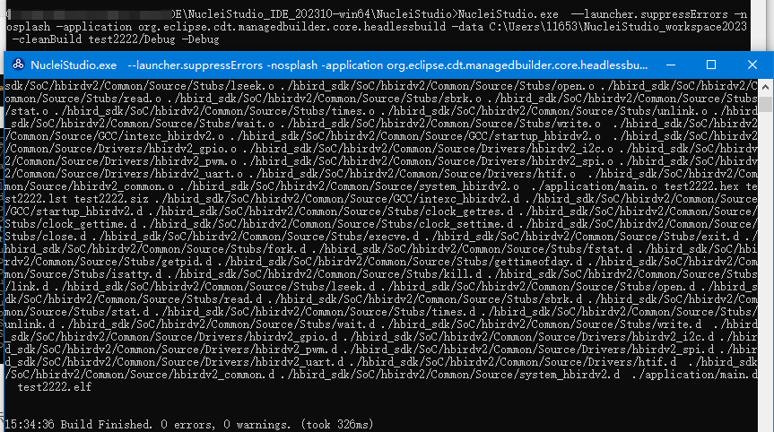

在Nuclei Studio下用命令行编译工程¶
以下文档是在2023.10版本的IDE中实测，其他版本可能需要做一些调整适配才可以正常工作。
Nuclei Studio是图形化（GUI）的代码编写工具，但是在某些特定的场景下，用户需要通过命令行来快速编译工程，
在Nuclei Studio中，只需要一行命令就可以实现。下载好Nuclei Studio后，在Nuclei Studio的workspace已经创建好了需要编译的工程test,
同时Nuclei Studio已退出运行, 执行以下命令就可以完成工程的编译。
提醒: 请确保 NucleiStudio的PATH已经设置到系统中，这样
NucleiStudio.exe/NucleiStudio才可以被执行。下面以Windows系统举例
NucleiStudio.exe --launcher.suppressErrors -nosplash -application org.eclipse.cdt.managedbuilder.core.headlessbuild -data C:\NucleiStudio_workspace -cleanBuild test/Debug -Debug
--launcher.suppressErrors用来屏蔽构建出错时，Eclipse会出错弹窗.
如果需要在2022.12版本的IDE上进行使用，则需要先设置好toolchain目录下gcc/bin和build-tools/bin的路径到系统PATH中，然后将NucleiStudio.exe换成eclipsec.exe
针对2022.12版本，命令举例如下:
# 这里请修改成自己的IDE路径
set NSIDE=D:\NucleiStudio_IDE_202212-win64\NucleiStudio
# 必须设置好系统PATH
set PATH=%NSIDE%\toolchain\gcc\bin;%NSIDE%\toolchain\build-tools\bin;%PATH%
# 注意NucleiStudio.exe换成了eclipsec.exe
%NSIDE%\eclipsec.exe --launcher.suppressErrors -nosplash -application org.eclipse.cdt.managedbuilder.core.headlessbuild -data C:\NucleiStudio_workspace -cleanBuild test/Debug
这个2023.10版本的举例的命令 会 弹出一个额外的命令行窗口进行输出。

NucleiStudio.exe：该参数是Nuclei Studio的启动应用，在Nuclei Studio的安装目录下。--launcher.suppressErrors：该参数是用于抑制Nuclei Studio启动时的错误信息。-nosplash：该参数用于关闭启动时的 Splash 屏幕。这意味着在启动 Eclipse 时不会显示一个短暂的加载屏幕。-application：该参数用于指定要运行的应用程序。在这里，org.eclipse.cdt.managedbuilder.core.headlessbuild是指 Headless 构建应用程序。该应用程序用于执行构建操作，而不需要图形用户界面（GUI）。-data：该参数用于指定工作区路径。它告诉 Nuclei Studio 将数据存储在哪里，例如工作空间、项目和文件。-build：该参数用于指定需要编译的工程，test/Debug，表示的是编译test工程中的Debug配置； 一般Nuclei Studio创建的工程有Debug、Release两套配置，如果不指定配置，这个默认会编译出Debug、Release， 可以看到编译后工程目录下有Debug、Release两个目录。
├─.settings
├─application
├─Debug
│ ├─application
│ └─nuclei_sdk
├─nuclei_sdk
└─Release
├─application
└─nuclei_sdk
-cleanBuild：该参数与-build类似，只是在编译之前，会清空清理工作空间。建议使用-cleanBuild。-Debug：该参数用于指定编译过程是Debug模式，在编译时会输出详细的编译过程日志。如果不带此参数，命令将静默执行，没有任何输出。
以下为上面举例命令的输出内容，以供参考
17:00:17 **** Clean-only build of configuration Debug for project test ****
make -j8 clean
rm -rf ./nuclei_sdk/SoC/evalsoc/Common/Source/Stubs/newlib/chown.o ./nuclei_sdk/SoC/evalsoc/Common/Source/Stubs/newlib/clock_getres.o ./nuclei_sdk/SoC/evalsoc/Common/Source/Stubs/newlib/clock_gettime.o ./nuclei_sdk/SoC/evalsoc/Common/Source/Stubs/newlib/clock_settime.o ./nuclei_sdk/SoC/evalsoc/Common/Source/Stubs/newlib/close.o ./nuclei_sdk/SoC/evalsoc/Common/Source/Stubs/newlib/environ.o ./nuclei_sdk/SoC/evalsoc/Common/Source/Stubs/newlib/errno.o ./nuclei_sdk/SoC/evalsoc/Common/Source/Stubs/newlib/execve.o ./nuclei_sdk/SoC/evalsoc/Common/Source/Stubs/newlib/exit.o ./nuclei_sdk/SoC/evalsoc/Common/Source/Stubs/newlib/fork.o ./nuclei_sdk/SoC/evalsoc/Common/Source/Stubs/newlib/fstat.o ./nuclei_sdk/SoC/evalsoc/Common/Source/Stubs/newlib/getpid.o ./nuclei_sdk/SoC/evalsoc/Common/Source/Stubs/newlib/gettimeofday.o ./nuclei_sdk/SoC/evalsoc/Common/Source/Stubs/newlib/isatty.o ./nuclei_sdk/SoC/evalsoc/Common/Source/Stubs/newlib/kill.o ./nuclei_sdk/SoC/evalsoc/Common/Source/Stubs/newlib/link.o ./nuclei_sdk/SoC/evalsoc/Common/Source/Stubs/newlib/lseek.o ./nuclei_sdk/SoC/evalsoc/Common/Source/Stubs/newlib/open.o ./nuclei_sdk/SoC/evalsoc/Common/Source/Stubs/newlib/read.o ./nuclei_sdk/SoC/evalsoc/Common/Source/Stubs/newlib/readlink.o ./nuclei_sdk/SoC/evalsoc/Common/Source/Stubs/newlib/sbrk.o ./nuclei_sdk/SoC/evalsoc/Common/Source/Stubs/newlib/stat.o ./nuclei_sdk/SoC/evalsoc/Common/Source/Stubs/newlib/symlink.o ./nuclei_sdk/SoC/evalsoc/Common/Source/Stubs/newlib/times.o ./nuclei_sdk/SoC/evalsoc/Common/Source/Stubs/newlib/unlink.o ./nuclei_sdk/SoC/evalsoc/Common/Source/Stubs/newlib/wait.o ./nuclei_sdk/SoC/evalsoc/Common/Source/Stubs/newlib/write.o ./nuclei_sdk/SoC/evalsoc/Common/Source/GCC/intexc_evalsoc.o ./nuclei_sdk/SoC/evalsoc/Common/Source/GCC/intexc_evalsoc_s.o ./nuclei_sdk/SoC/evalsoc/Common/Source/GCC/startup_evalsoc.o ./nuclei_sdk/SoC/evalsoc/Common/Source/Drivers/evalsoc_uart.o ./nuclei_sdk/SoC/evalsoc/Common/Source/evalsoc_common.o ./nuclei_sdk/SoC/evalsoc/Common/Source/system_evalsoc.o ./application/main.o test.hex test.lst test.siz ./nuclei_sdk/SoC/evalsoc/Common/Source/GCC/intexc_evalsoc.d ./nuclei_sdk/SoC/evalsoc/Common/Source/GCC/intexc_evalsoc_s.d ./nuclei_sdk/SoC/evalsoc/Common/Source/GCC/startup_evalsoc.d ./nuclei_sdk/SoC/evalsoc/Common/Source/Stubs/newlib/chown.d ./nuclei_sdk/SoC/evalsoc/Common/Source/Stubs/newlib/clock_getres.d ./nuclei_sdk/SoC/evalsoc/Common/Source/Stubs/newlib/clock_gettime.d ./nuclei_sdk/SoC/evalsoc/Common/Source/Stubs/newlib/clock_settime.d ./nuclei_sdk/SoC/evalsoc/Common/Source/Stubs/newlib/close.d ./nuclei_sdk/SoC/evalsoc/Common/Source/Stubs/newlib/environ.d ./nuclei_sdk/SoC/evalsoc/Common/Source/Stubs/newlib/errno.d ./nuclei_sdk/SoC/evalsoc/Common/Source/Stubs/newlib/execve.d ./nuclei_sdk/SoC/evalsoc/Common/Source/Stubs/newlib/exit.d ./nuclei_sdk/SoC/evalsoc/Common/Source/Stubs/newlib/fork.d ./nuclei_sdk/SoC/evalsoc/Common/Source/Stubs/newlib/fstat.d ./nuclei_sdk/SoC/evalsoc/Common/Source/Stubs/newlib/getpid.d ./nuclei_sdk/SoC/evalsoc/Common/Source/Stubs/newlib/gettimeofday.d ./nuclei_sdk/SoC/evalsoc/Common/Source/Stubs/newlib/isatty.d ./nuclei_sdk/SoC/evalsoc/Common/Source/Stubs/newlib/kill.d ./nuclei_sdk/SoC/evalsoc/Common/Source/Stubs/newlib/link.d ./nuclei_sdk/SoC/evalsoc/Common/Source/Stubs/newlib/lseek.d ./nuclei_sdk/SoC/evalsoc/Common/Source/Stubs/newlib/open.d ./nuclei_sdk/SoC/evalsoc/Common/Source/Stubs/newlib/read.d ./nuclei_sdk/SoC/evalsoc/Common/Source/Stubs/newlib/readlink.d ./nuclei_sdk/SoC/evalsoc/Common/Source/Stubs/newlib/sbrk.d ./nuclei_sdk/SoC/evalsoc/Common/Source/Stubs/newlib/stat.d ./nuclei_sdk/SoC/evalsoc/Common/Source/Stubs/newlib/symlink.d ./nuclei_sdk/SoC/evalsoc/Common/Source/Stubs/newlib/times.d ./nuclei_sdk/SoC/evalsoc/Common/Source/Stubs/newlib/unlink.d ./nuclei_sdk/SoC/evalsoc/Common/Source/Stubs/newlib/wait.d ./nuclei_sdk/SoC/evalsoc/Common/Source/Stubs/newlib/write.d ./nuclei_sdk/SoC/evalsoc/Common/Source/Drivers/evalsoc_uart.d ./nuclei_sdk/SoC/evalsoc/Common/Source/evalsoc_common.d ./nuclei_sdk/SoC/evalsoc/Common/Source/system_evalsoc.d ./application/main.d test.elf
17:00:17 Build Finished. 0 errors, 0 warnings. (took 371ms)
17:00:18 **** Build of configuration Debug for project test ****
make -j8 all
Building file: ../nuclei_sdk/SoC/evalsoc/Common/Source/Stubs/newlib/chown.c
Building file: ../nuclei_sdk/SoC/evalsoc/Common/Source/Stubs/newlib/clock_getres.c
Building file: ../nuclei_sdk/SoC/evalsoc/Common/Source/Stubs/newlib/clock_gettime.c
Invoking: GNU RISC-V Cross C Compiler
Invoking: GNU RISC-V Cross C Compiler
riscv64-unknown-elf-gcc -march=rv32imafdc -mabi=ilp32d -mtune=nuclei-300-series -mcmodel=medlow -msave-restore -isystem=/include/newlib-nano -O2 -ffunction-sections -fdata-sections -fno-common -g -D__IDE_RV_CORE=n307fd -DBOOT_HARTID=0 -DRUNMODE_IC_EN=0 -DRUNMODE_DC_EN=0 -DRUNMODE_CCM_EN=0 -DDOWNLOAD_MODE=DOWNLOAD_MODE_ILM -DDOWNLOAD_MODE_STRING=\"ILM\" -I"C:\NucleiStudio_workspace\test\nuclei_sdk\NMSIS\Core\Include" -I"C:\NucleiStudio_workspace\test\nuclei_sdk\SoC\evalsoc\Common\Include" -I"C:\NucleiStudio_workspace\test\nuclei_sdk\SoC\evalsoc\Board\nuclei_fpga_eval\Include" -I"C:\NucleiStudio_workspace\test\application" -std=gnu11 -MMD -MP -MF"nuclei_sdk/SoC/evalsoc/Common/Source/Stubs/newlib/chown.d" -MT"nuclei_sdk/SoC/evalsoc/Common/Source/Stubs/newlib/chown.o" -c -o "nuclei_sdk/SoC/evalsoc/Common/Source/Stubs/newlib/chown.o" "../nuclei_sdk/SoC/evalsoc/Common/Source/Stubs/newlib/chown.c"
Building file: ../nuclei_sdk/SoC/evalsoc/Common/Source/Stubs/newlib/clock_settime.c
riscv64-unknown-elf-gcc -march=rv32imafdc -mabi=ilp32d -mtune=nuclei-300-series -mcmodel=medlow -msave-restore -isystem=/include/newlib-nano -O2 -ffunction-sections -fdata-sections -fno-common -g -D__IDE_RV_CORE=n307fd -DBOOT_HARTID=0 -DRUNMODE_IC_EN=0 -DRUNMODE_DC_EN=0 -DRUNMODE_CCM_EN=0 -DDOWNLOAD_MODE=DOWNLOAD_MODE_ILM -DDOWNLOAD_MODE_STRING=\"ILM\" -I"C:\NucleiStudio_workspace\test\nuclei_sdk\NMSIS\Core\Include" -I"C:\NucleiStudio_workspace\test\nuclei_sdk\SoC\evalsoc\Common\Include" -I"C:\NucleiStudio_workspace\test\nuclei_sdk\SoC\evalsoc\Board\nuclei_fpga_eval\Include" -I"C:\NucleiStudio_workspace\test\application" -std=gnu11 -MMD -MP -MF"nuclei_sdk/SoC/evalsoc/Common/Source/Stubs/newlib/clock_getres.d" -MT"nuclei_sdk/SoC/evalsoc/Common/Source/Stubs/newlib/clock_getres.o" -c -o "nuclei_sdk/SoC/evalsoc/Common/Source/Stubs/newlib/clock_getres.o" "../nuclei_sdk/SoC/evalsoc/Common/Source/Stubs/newlib/clock_getres.c"
Invoking: GNU RISC-V Cross C Compiler
riscv64-unknown-elf-gcc -march=rv32imafdc -mabi=ilp32d -mtune=nuclei-300-series -mcmodel=medlow -msave-restore -isystem=/include/newlib-nano -O2 -ffunction-sections -fdata-sections -fno-common -g -D__IDE_RV_CORE=n307fd -DBOOT_HARTID=0 -DRUNMODE_IC_EN=0 -DRUNMODE_DC_EN=0 -DRUNMODE_CCM_EN=0 -DDOWNLOAD_MODE=DOWNLOAD_MODE_ILM -DDOWNLOAD_MODE_STRING=\"ILM\" -I"C:\NucleiStudio_workspace\test\nuclei_sdk\NMSIS\Core\Include" -I"C:\NucleiStudio_workspace\test\nuclei_sdk\SoC\evalsoc\Common\Include" -I"C:\NucleiStudio_workspace\test\nuclei_sdk\SoC\evalsoc\Board\nuclei_fpga_eval\Include" -I"C:\NucleiStudio_workspace\test\application" -std=gnu11 -MMD -MP -MF"nuclei_sdk/SoC/evalsoc/Common/Source/Stubs/newlib/clock_gettime.d" -MT"nuclei_sdk/SoC/evalsoc/Common/Source/Stubs/newlib/clock_gettime.o" -c -o "nuclei_sdk/SoC/evalsoc/Common/Source/Stubs/newlib/clock_gettime.o" "../nuclei_sdk/SoC/evalsoc/Common/Source/Stubs/newlib/clock_gettime.c"
Invoking: GNU RISC-V Cross C Compiler
riscv64-unknown-elf-gcc -march=rv32imafdc -mabi=ilp32d -mtune=nuclei-300-series -mcmodel=medlow -msave-restore -isystem=/include/newlib-nano -O2 -ffunction-sections -fdata-sections -fno-common -g -D__IDE_RV_CORE=n307fd -DBOOT_HARTID=0 -DRUNMODE_IC_EN=0 -DRUNMODE_DC_EN=0 -DRUNMODE_CCM_EN=0 -DDOWNLOAD_MODE=DOWNLOAD_MODE_ILM -DDOWNLOAD_MODE_STRING=\"ILM\" -I"C:\NucleiStudio_workspace\test\nuclei_sdk\NMSIS\Core\Include" -I"C:\NucleiStudio_workspace\test\nuclei_sdk\SoC\evalsoc\Common\Include" -I"C:\NucleiStudio_workspace\test\nuclei_sdk\SoC\evalsoc\Board\nuclei_fpga_eval\Include" -I"C:\NucleiStudio_workspace\test\application" -std=gnu11 -MMD -MP -MF"nuclei_sdk/SoC/evalsoc/Common/Source/Stubs/newlib/clock_settime.d" -MT"nuclei_sdk/SoC/evalsoc/Common/Source/Stubs/newlib/clock_settime.o" -c -o "nuclei_sdk/SoC/evalsoc/Common/Source/Stubs/newlib/clock_settime.o" "../nuclei_sdk/SoC/evalsoc/Common/Source/Stubs/newlib/clock_settime.c"
Building file: ../nuclei_sdk/SoC/evalsoc/Common/Source/Stubs/newlib/close.c
Building file: ../nuclei_sdk/SoC/evalsoc/Common/Source/Stubs/newlib/environ.c
Invoking: GNU RISC-V Cross C Compiler
Building file: ../nuclei_sdk/SoC/evalsoc/Common/Source/Stubs/newlib/errno.c
Building file: ../nuclei_sdk/SoC/evalsoc/Common/Source/Stubs/newlib/execve.c
riscv64-unknown-elf-gcc -march=rv32imafdc -mabi=ilp32d -mtune=nuclei-300-series -mcmodel=medlow -msave-restore -isystem=/include/newlib-nano -O2 -ffunction-sections -fdata-sections -fno-common -g -D__IDE_RV_CORE=n307fd -DBOOT_HARTID=0 -DRUNMODE_IC_EN=0 -DRUNMODE_DC_EN=0 -DRUNMODE_CCM_EN=0 -DDOWNLOAD_MODE=DOWNLOAD_MODE_ILM -DDOWNLOAD_MODE_STRING=\"ILM\" -I"C:\NucleiStudio_workspace\test\nuclei_sdk\NMSIS\Core\Include" -I"C:\NucleiStudio_workspace\test\nuclei_sdk\SoC\evalsoc\Common\Include" -I"C:\NucleiStudio_workspace\test\nuclei_sdk\SoC\evalsoc\Board\nuclei_fpga_eval\Include" -I"C:\NucleiStudio_workspace\test\application" -std=gnu11 -MMD -MP -MF"nuclei_sdk/SoC/evalsoc/Common/Source/Stubs/newlib/close.d" -MT"nuclei_sdk/SoC/evalsoc/Common/Source/Stubs/newlib/close.o" -c -o "nuclei_sdk/SoC/evalsoc/Common/Source/Stubs/newlib/close.o" "../nuclei_sdk/SoC/evalsoc/Common/Source/Stubs/newlib/close.c"
Invoking: GNU RISC-V Cross C Compiler
riscv64-unknown-elf-gcc -march=rv32imafdc -mabi=ilp32d -mtune=nuclei-300-series -mcmodel=medlow -msave-restore -isystem=/include/newlib-nano -O2 -ffunction-sections -fdata-sections -fno-common -g -D__IDE_RV_CORE=n307fd -DBOOT_HARTID=0 -DRUNMODE_IC_EN=0 -DRUNMODE_DC_EN=0 -DRUNMODE_CCM_EN=0 -DDOWNLOAD_MODE=DOWNLOAD_MODE_ILM -DDOWNLOAD_MODE_STRING=\"ILM\" -I"C:\NucleiStudio_workspace\test\nuclei_sdk\NMSIS\Core\Include" -I"C:\NucleiStudio_workspace\test\nuclei_sdk\SoC\evalsoc\Common\Include" -I"C:\NucleiStudio_workspace\test\nuclei_sdk\SoC\evalsoc\Board\nuclei_fpga_eval\Include" -I"C:\NucleiStudio_workspace\test\application" -std=gnu11 -MMD -MP -MF"nuclei_sdk/SoC/evalsoc/Common/Source/Stubs/newlib/environ.d" -MT"nuclei_sdk/SoC/evalsoc/Common/Source/Stubs/newlib/environ.o" -c -o "nuclei_sdk/SoC/evalsoc/Common/Source/Stubs/newlib/environ.o" "../nuclei_sdk/SoC/evalsoc/Common/Source/Stubs/newlib/environ.c"
Invoking: GNU RISC-V Cross C Compiler
riscv64-unknown-elf-gcc -march=rv32imafdc -mabi=ilp32d -mtune=nuclei-300-series -mcmodel=medlow -msave-restore -isystem=/include/newlib-nano -O2 -ffunction-sections -fdata-sections -fno-common -g -D__IDE_RV_CORE=n307fd -DBOOT_HARTID=0 -DRUNMODE_IC_EN=0 -DRUNMODE_DC_EN=0 -DRUNMODE_CCM_EN=0 -DDOWNLOAD_MODE=DOWNLOAD_MODE_ILM -DDOWNLOAD_MODE_STRING=\"ILM\" -I"C:\NucleiStudio_workspace\test\nuclei_sdk\NMSIS\Core\Include" -I"C:\NucleiStudio_workspace\test\nuclei_sdk\SoC\evalsoc\Common\Include" -I"C:\NucleiStudio_workspace\test\nuclei_sdk\SoC\evalsoc\Board\nuclei_fpga_eval\Include" -I"C:\NucleiStudio_workspace\test\application" -std=gnu11 -MMD -MP -MF"nuclei_sdk/SoC/evalsoc/Common/Source/Stubs/newlib/errno.d" -MT"nuclei_sdk/SoC/evalsoc/Common/Source/Stubs/newlib/errno.o" -c -o "nuclei_sdk/SoC/evalsoc/Common/Source/Stubs/newlib/errno.o" "../nuclei_sdk/SoC/evalsoc/Common/Source/Stubs/newlib/errno.c"
Invoking: GNU RISC-V Cross C Compiler
riscv64-unknown-elf-gcc -march=rv32imafdc -mabi=ilp32d -mtune=nuclei-300-series -mcmodel=medlow -msave-restore -isystem=/include/newlib-nano -O2 -ffunction-sections -fdata-sections -fno-common -g -D__IDE_RV_CORE=n307fd -DBOOT_HARTID=0 -DRUNMODE_IC_EN=0 -DRUNMODE_DC_EN=0 -DRUNMODE_CCM_EN=0 -DDOWNLOAD_MODE=DOWNLOAD_MODE_ILM -DDOWNLOAD_MODE_STRING=\"ILM\" -I"C:\NucleiStudio_workspace\test\nuclei_sdk\NMSIS\Core\Include" -I"C:\NucleiStudio_workspace\test\nuclei_sdk\SoC\evalsoc\Common\Include" -I"C:\NucleiStudio_workspace\test\nuclei_sdk\SoC\evalsoc\Board\nuclei_fpga_eval\Include" -I"C:\NucleiStudio_workspace\test\application" -std=gnu11 -MMD -MP -MF"nuclei_sdk/SoC/evalsoc/Common/Source/Stubs/newlib/execve.d" -MT"nuclei_sdk/SoC/evalsoc/Common/Source/Stubs/newlib/execve.o" -c -o "nuclei_sdk/SoC/evalsoc/Common/Source/Stubs/newlib/execve.o" "../nuclei_sdk/SoC/evalsoc/Common/Source/Stubs/newlib/execve.c"
Finished building: ../nuclei_sdk/SoC/evalsoc/Common/Source/Stubs/newlib/environ.c
Finished building: ../nuclei_sdk/SoC/evalsoc/Common/Source/Stubs/newlib/chown.c
Finished building: ../nuclei_sdk/SoC/evalsoc/Common/Source/Stubs/newlib/clock_getres.c
Finished building: ../nuclei_sdk/SoC/evalsoc/Common/Source/Stubs/newlib/clock_settime.c
Finished building: ../nuclei_sdk/SoC/evalsoc/Common/Source/Stubs/newlib/close.c
Finished building: ../nuclei_sdk/SoC/evalsoc/Common/Source/Stubs/newlib/clock_gettime.c
Building file: ../nuclei_sdk/SoC/evalsoc/Common/Source/Stubs/newlib/exit.c
Building file: ../nuclei_sdk/SoC/evalsoc/Common/Source/Stubs/newlib/fork.c
Building file: ../nuclei_sdk/SoC/evalsoc/Common/Source/Stubs/newlib/fstat.c
Invoking: GNU RISC-V Cross C Compiler
Invoking: GNU RISC-V Cross C Compiler
riscv64-unknown-elf-gcc -march=rv32imafdc -mabi=ilp32d -mtune=nuclei-300-series -mcmodel=medlow -msave-restore -isystem=/include/newlib-nano -O2 -ffunction-sections -fdata-sections -fno-common -g -D__IDE_RV_CORE=n307fd -DBOOT_HARTID=0 -DRUNMODE_IC_EN=0 -DRUNMODE_DC_EN=0 -DRUNMODE_CCM_EN=0 -DDOWNLOAD_MODE=DOWNLOAD_MODE_ILM -DDOWNLOAD_MODE_STRING=\"ILM\" -I"C:\NucleiStudio_workspace\test\nuclei_sdk\NMSIS\Core\Include" -I"C:\NucleiStudio_workspace\test\nuclei_sdk\SoC\evalsoc\Common\Include" -I"C:\NucleiStudio_workspace\test\nuclei_sdk\SoC\evalsoc\Board\nuclei_fpga_eval\Include" -I"C:\NucleiStudio_workspace\test\application" -std=gnu11 -MMD -MP -MF"nuclei_sdk/SoC/evalsoc/Common/Source/Stubs/newlib/exit.d" -MT"nuclei_sdk/SoC/evalsoc/Common/Source/Stubs/newlib/exit.o" -c -o "nuclei_sdk/SoC/evalsoc/Common/Source/Stubs/newlib/exit.o" "../nuclei_sdk/SoC/evalsoc/Common/Source/Stubs/newlib/exit.c"
Building file: ../nuclei_sdk/SoC/evalsoc/Common/Source/Stubs/newlib/getpid.c
Invoking: GNU RISC-V Cross C Compiler
riscv64-unknown-elf-gcc -march=rv32imafdc -mabi=ilp32d -mtune=nuclei-300-series -mcmodel=medlow -msave-restore -isystem=/include/newlib-nano -O2 -ffunction-sections -fdata-sections -fno-common -g -D__IDE_RV_CORE=n307fd -DBOOT_HARTID=0 -DRUNMODE_IC_EN=0 -DRUNMODE_DC_EN=0 -DRUNMODE_CCM_EN=0 -DDOWNLOAD_MODE=DOWNLOAD_MODE_ILM -DDOWNLOAD_MODE_STRING=\"ILM\" -I"C:\NucleiStudio_workspace\test\nuclei_sdk\NMSIS\Core\Include" -I"C:\NucleiStudio_workspace\test\nuclei_sdk\SoC\evalsoc\Common\Include" -I"C:\NucleiStudio_workspace\test\nuclei_sdk\SoC\evalsoc\Board\nuclei_fpga_eval\Include" -I"C:\NucleiStudio_workspace\test\application" -std=gnu11 -MMD -MP -MF"nuclei_sdk/SoC/evalsoc/Common/Source/Stubs/newlib/fork.d" -MT"nuclei_sdk/SoC/evalsoc/Common/Source/Stubs/newlib/fork.o" -c -o "nuclei_sdk/SoC/evalsoc/Common/Source/Stubs/newlib/fork.o" "../nuclei_sdk/SoC/evalsoc/Common/Source/Stubs/newlib/fork.c"
Finished building: ../nuclei_sdk/SoC/evalsoc/Common/Source/Stubs/newlib/execve.c
riscv64-unknown-elf-gcc -march=rv32imafdc -mabi=ilp32d -mtune=nuclei-300-series -mcmodel=medlow -msave-restore -isystem=/include/newlib-nano -O2 -ffunction-sections -fdata-sections -fno-common -g -D__IDE_RV_CORE=n307fd -DBOOT_HARTID=0 -DRUNMODE_IC_EN=0 -DRUNMODE_DC_EN=0 -DRUNMODE_CCM_EN=0 -DDOWNLOAD_MODE=DOWNLOAD_MODE_ILM -DDOWNLOAD_MODE_STRING=\"ILM\" -I"C:\NucleiStudio_workspace\test\nuclei_sdk\NMSIS\Core\Include" -I"C:\NucleiStudio_workspace\test\nuclei_sdk\SoC\evalsoc\Common\Include" -I"C:\NucleiStudio_workspace\test\nuclei_sdk\SoC\evalsoc\Board\nuclei_fpga_eval\Include" -I"C:\NucleiStudio_workspace\test\application" -std=gnu11 -MMD -MP -MF"nuclei_sdk/SoC/evalsoc/Common/Source/Stubs/newlib/fstat.d" -MT"nuclei_sdk/SoC/evalsoc/Common/Source/Stubs/newlib/fstat.o" -c -o "nuclei_sdk/SoC/evalsoc/Common/Source/Stubs/newlib/fstat.o" "../nuclei_sdk/SoC/evalsoc/Common/Source/Stubs/newlib/fstat.c"
Invoking: GNU RISC-V Cross C Compiler
riscv64-unknown-elf-gcc -march=rv32imafdc -mabi=ilp32d -mtune=nuclei-300-series -mcmodel=medlow -msave-restore -isystem=/include/newlib-nano -O2 -ffunction-sections -fdata-sections -fno-common -g -D__IDE_RV_CORE=n307fd -DBOOT_HARTID=0 -DRUNMODE_IC_EN=0 -DRUNMODE_DC_EN=0 -DRUNMODE_CCM_EN=0 -DDOWNLOAD_MODE=DOWNLOAD_MODE_ILM -DDOWNLOAD_MODE_STRING=\"ILM\" -I"C:\NucleiStudio_workspace\test\nuclei_sdk\NMSIS\Core\Include" -I"C:\NucleiStudio_workspace\test\nuclei_sdk\SoC\evalsoc\Common\Include" -I"C:\NucleiStudio_workspace\test\nuclei_sdk\SoC\evalsoc\Board\nuclei_fpga_eval\Include" -I"C:\NucleiStudio_workspace\test\application" -std=gnu11 -MMD -MP -MF"nuclei_sdk/SoC/evalsoc/Common/Source/Stubs/newlib/getpid.d" -MT"nuclei_sdk/SoC/evalsoc/Common/Source/Stubs/newlib/getpid.o" -c -o "nuclei_sdk/SoC/evalsoc/Common/Source/Stubs/newlib/getpid.o" "../nuclei_sdk/SoC/evalsoc/Common/Source/Stubs/newlib/getpid.c"
Building file: ../nuclei_sdk/SoC/evalsoc/Common/Source/Stubs/newlib/gettimeofday.c
Building file: ../nuclei_sdk/SoC/evalsoc/Common/Source/Stubs/newlib/isatty.c
Invoking: GNU RISC-V Cross C Compiler
Building file: ../nuclei_sdk/SoC/evalsoc/Common/Source/Stubs/newlib/kill.c
riscv64-unknown-elf-gcc -march=rv32imafdc -mabi=ilp32d -mtune=nuclei-300-series -mcmodel=medlow -msave-restore -isystem=/include/newlib-nano -O2 -ffunction-sections -fdata-sections -fno-common -g -D__IDE_RV_CORE=n307fd -DBOOT_HARTID=0 -DRUNMODE_IC_EN=0 -DRUNMODE_DC_EN=0 -DRUNMODE_CCM_EN=0 -DDOWNLOAD_MODE=DOWNLOAD_MODE_ILM -DDOWNLOAD_MODE_STRING=\"ILM\" -I"C:\NucleiStudio_workspace\test\nuclei_sdk\NMSIS\Core\Include" -I"C:\NucleiStudio_workspace\test\nuclei_sdk\SoC\evalsoc\Common\Include" -I"C:\NucleiStudio_workspace\test\nuclei_sdk\SoC\evalsoc\Board\nuclei_fpga_eval\Include" -I"C:\NucleiStudio_workspace\test\application" -std=gnu11 -MMD -MP -MF"nuclei_sdk/SoC/evalsoc/Common/Source/Stubs/newlib/gettimeofday.d" -MT"nuclei_sdk/SoC/evalsoc/Common/Source/Stubs/newlib/gettimeofday.o" -c -o "nuclei_sdk/SoC/evalsoc/Common/Source/Stubs/newlib/gettimeofday.o" "../nuclei_sdk/SoC/evalsoc/Common/Source/Stubs/newlib/gettimeofday.c"
Invoking: GNU RISC-V Cross C Compiler
riscv64-unknown-elf-gcc -march=rv32imafdc -mabi=ilp32d -mtune=nuclei-300-series -mcmodel=medlow -msave-restore -isystem=/include/newlib-nano -O2 -ffunction-sections -fdata-sections -fno-common -g -D__IDE_RV_CORE=n307fd -DBOOT_HARTID=0 -DRUNMODE_IC_EN=0 -DRUNMODE_DC_EN=0 -DRUNMODE_CCM_EN=0 -DDOWNLOAD_MODE=DOWNLOAD_MODE_ILM -DDOWNLOAD_MODE_STRING=\"ILM\" -I"C:\NucleiStudio_workspace\test\nuclei_sdk\NMSIS\Core\Include" -I"C:\NucleiStudio_workspace\test\nuclei_sdk\SoC\evalsoc\Common\Include" -I"C:\NucleiStudio_workspace\test\nuclei_sdk\SoC\evalsoc\Board\nuclei_fpga_eval\Include" -I"C:\NucleiStudio_workspace\test\application" -std=gnu11 -MMD -MP -MF"nuclei_sdk/SoC/evalsoc/Common/Source/Stubs/newlib/isatty.d" -MT"nuclei_sdk/SoC/evalsoc/Common/Source/Stubs/newlib/isatty.o" -c -o "nuclei_sdk/SoC/evalsoc/Common/Source/Stubs/newlib/isatty.o" "../nuclei_sdk/SoC/evalsoc/Common/Source/Stubs/newlib/isatty.c"
Invoking: GNU RISC-V Cross C Compiler
riscv64-unknown-elf-gcc -march=rv32imafdc -mabi=ilp32d -mtune=nuclei-300-series -mcmodel=medlow -msave-restore -isystem=/include/newlib-nano -O2 -ffunction-sections -fdata-sections -fno-common -g -D__IDE_RV_CORE=n307fd -DBOOT_HARTID=0 -DRUNMODE_IC_EN=0 -DRUNMODE_DC_EN=0 -DRUNMODE_CCM_EN=0 -DDOWNLOAD_MODE=DOWNLOAD_MODE_ILM -DDOWNLOAD_MODE_STRING=\"ILM\" -I"C:\NucleiStudio_workspace\test\nuclei_sdk\NMSIS\Core\Include" -I"C:\NucleiStudio_workspace\test\nuclei_sdk\SoC\evalsoc\Common\Include" -I"C:\NucleiStudio_workspace\test\nuclei_sdk\SoC\evalsoc\Board\nuclei_fpga_eval\Include" -I"C:\NucleiStudio_workspace\test\application" -std=gnu11 -MMD -MP -MF"nuclei_sdk/SoC/evalsoc/Common/Source/Stubs/newlib/kill.d" -MT"nuclei_sdk/SoC/evalsoc/Common/Source/Stubs/newlib/kill.o" -c -o "nuclei_sdk/SoC/evalsoc/Common/Source/Stubs/newlib/kill.o" "../nuclei_sdk/SoC/evalsoc/Common/Source/Stubs/newlib/kill.c"
Finished building: ../nuclei_sdk/SoC/evalsoc/Common/Source/Stubs/newlib/exit.c
Finished building: ../nuclei_sdk/SoC/evalsoc/Common/Source/Stubs/newlib/errno.c
Finished building: ../nuclei_sdk/SoC/evalsoc/Common/Source/Stubs/newlib/fork.c
Building file: ../nuclei_sdk/SoC/evalsoc/Common/Source/Stubs/newlib/link.c
Building file: ../nuclei_sdk/SoC/evalsoc/Common/Source/Stubs/newlib/lseek.c
Invoking: GNU RISC-V Cross C Compiler
Finished building: ../nuclei_sdk/SoC/evalsoc/Common/Source/Stubs/newlib/gettimeofday.c
riscv64-unknown-elf-gcc -march=rv32imafdc -mabi=ilp32d -mtune=nuclei-300-series -mcmodel=medlow -msave-restore -isystem=/include/newlib-nano -O2 -ffunction-sections -fdata-sections -fno-common -g -D__IDE_RV_CORE=n307fd -DBOOT_HARTID=0 -DRUNMODE_IC_EN=0 -DRUNMODE_DC_EN=0 -DRUNMODE_CCM_EN=0 -DDOWNLOAD_MODE=DOWNLOAD_MODE_ILM -DDOWNLOAD_MODE_STRING=\"ILM\" -I"C:\NucleiStudio_workspace\test\nuclei_sdk\NMSIS\Core\Include" -I"C:\NucleiStudio_workspace\test\nuclei_sdk\SoC\evalsoc\Common\Include" -I"C:\NucleiStudio_workspace\test\nuclei_sdk\SoC\evalsoc\Board\nuclei_fpga_eval\Include" -I"C:\NucleiStudio_workspace\test\application" -std=gnu11 -MMD -MP -MF"nuclei_sdk/SoC/evalsoc/Common/Source/Stubs/newlib/link.d" -MT"nuclei_sdk/SoC/evalsoc/Common/Source/Stubs/newlib/link.o" -c -o "nuclei_sdk/SoC/evalsoc/Common/Source/Stubs/newlib/link.o" "../nuclei_sdk/SoC/evalsoc/Common/Source/Stubs/newlib/link.c"
Building file: ../nuclei_sdk/SoC/evalsoc/Common/Source/Stubs/newlib/open.c
Invoking: GNU RISC-V Cross C Compiler
riscv64-unknown-elf-gcc -march=rv32imafdc -mabi=ilp32d -mtune=nuclei-300-series -mcmodel=medlow -msave-restore -isystem=/include/newlib-nano -O2 -ffunction-sections -fdata-sections -fno-common -g -D__IDE_RV_CORE=n307fd -DBOOT_HARTID=0 -DRUNMODE_IC_EN=0 -DRUNMODE_DC_EN=0 -DRUNMODE_CCM_EN=0 -DDOWNLOAD_MODE=DOWNLOAD_MODE_ILM -DDOWNLOAD_MODE_STRING=\"ILM\" -I"C:\NucleiStudio_workspace\test\nuclei_sdk\NMSIS\Core\Include" -I"C:\NucleiStudio_workspace\test\nuclei_sdk\SoC\evalsoc\Common\Include" -I"C:\NucleiStudio_workspace\test\nuclei_sdk\SoC\evalsoc\Board\nuclei_fpga_eval\Include" -I"C:\NucleiStudio_workspace\test\application" -std=gnu11 -MMD -MP -MF"nuclei_sdk/SoC/evalsoc/Common/Source/Stubs/newlib/lseek.d" -MT"nuclei_sdk/SoC/evalsoc/Common/Source/Stubs/newlib/lseek.o" -c -o "nuclei_sdk/SoC/evalsoc/Common/Source/Stubs/newlib/lseek.o" "../nuclei_sdk/SoC/evalsoc/Common/Source/Stubs/newlib/lseek.c"
Invoking: GNU RISC-V Cross C Compiler
riscv64-unknown-elf-gcc -march=rv32imafdc -mabi=ilp32d -mtune=nuclei-300-series -mcmodel=medlow -msave-restore -isystem=/include/newlib-nano -O2 -ffunction-sections -fdata-sections -fno-common -g -D__IDE_RV_CORE=n307fd -DBOOT_HARTID=0 -DRUNMODE_IC_EN=0 -DRUNMODE_DC_EN=0 -DRUNMODE_CCM_EN=0 -DDOWNLOAD_MODE=DOWNLOAD_MODE_ILM -DDOWNLOAD_MODE_STRING=\"ILM\" -I"C:\NucleiStudio_workspace\test\nuclei_sdk\NMSIS\Core\Include" -I"C:\NucleiStudio_workspace\test\nuclei_sdk\SoC\evalsoc\Common\Include" -I"C:\NucleiStudio_workspace\test\nuclei_sdk\SoC\evalsoc\Board\nuclei_fpga_eval\Include" -I"C:\NucleiStudio_workspace\test\application" -std=gnu11 -MMD -MP -MF"nuclei_sdk/SoC/evalsoc/Common/Source/Stubs/newlib/open.d" -MT"nuclei_sdk/SoC/evalsoc/Common/Source/Stubs/newlib/open.o" -c -o "nuclei_sdk/SoC/evalsoc/Common/Source/Stubs/newlib/open.o" "../nuclei_sdk/SoC/evalsoc/Common/Source/Stubs/newlib/open.c"
Building file: ../nuclei_sdk/SoC/evalsoc/Common/Source/Stubs/newlib/read.c
Finished building: ../nuclei_sdk/SoC/evalsoc/Common/Source/Stubs/newlib/kill.c
Finished building: ../nuclei_sdk/SoC/evalsoc/Common/Source/Stubs/newlib/getpid.c
Invoking: GNU RISC-V Cross C Compiler
riscv64-unknown-elf-gcc -march=rv32imafdc -mabi=ilp32d -mtune=nuclei-300-series -mcmodel=medlow -msave-restore -isystem=/include/newlib-nano -O2 -ffunction-sections -fdata-sections -fno-common -g -D__IDE_RV_CORE=n307fd -DBOOT_HARTID=0 -DRUNMODE_IC_EN=0 -DRUNMODE_DC_EN=0 -DRUNMODE_CCM_EN=0 -DDOWNLOAD_MODE=DOWNLOAD_MODE_ILM -DDOWNLOAD_MODE_STRING=\"ILM\" -I"C:\NucleiStudio_workspace\test\nuclei_sdk\NMSIS\Core\Include" -I"C:\NucleiStudio_workspace\test\nuclei_sdk\SoC\evalsoc\Common\Include" -I"C:\NucleiStudio_workspace\test\nuclei_sdk\SoC\evalsoc\Board\nuclei_fpga_eval\Include" -I"C:\NucleiStudio_workspace\test\application" -std=gnu11 -MMD -MP -MF"nuclei_sdk/SoC/evalsoc/Common/Source/Stubs/newlib/read.d" -MT"nuclei_sdk/SoC/evalsoc/Common/Source/Stubs/newlib/read.o" -c -o "nuclei_sdk/SoC/evalsoc/Common/Source/Stubs/newlib/read.o" "../nuclei_sdk/SoC/evalsoc/Common/Source/Stubs/newlib/read.c"
Building file: ../nuclei_sdk/SoC/evalsoc/Common/Source/Stubs/newlib/readlink.c
Building file: ../nuclei_sdk/SoC/evalsoc/Common/Source/Stubs/newlib/sbrk.c
Invoking: GNU RISC-V Cross C Compiler
riscv64-unknown-elf-gcc -march=rv32imafdc -mabi=ilp32d -mtune=nuclei-300-series -mcmodel=medlow -msave-restore -isystem=/include/newlib-nano -O2 -ffunction-sections -fdata-sections -fno-common -g -D__IDE_RV_CORE=n307fd -DBOOT_HARTID=0 -DRUNMODE_IC_EN=0 -DRUNMODE_DC_EN=0 -DRUNMODE_CCM_EN=0 -DDOWNLOAD_MODE=DOWNLOAD_MODE_ILM -DDOWNLOAD_MODE_STRING=\"ILM\" -I"C:\NucleiStudio_workspace\test\nuclei_sdk\NMSIS\Core\Include" -I"C:\NucleiStudio_workspace\test\nuclei_sdk\SoC\evalsoc\Common\Include" -I"C:\NucleiStudio_workspace\test\nuclei_sdk\SoC\evalsoc\Board\nuclei_fpga_eval\Include" -I"C:\NucleiStudio_workspace\test\application" -std=gnu11 -MMD -MP -MF"nuclei_sdk/SoC/evalsoc/Common/Source/Stubs/newlib/readlink.d" -MT"nuclei_sdk/SoC/evalsoc/Common/Source/Stubs/newlib/readlink.o" -c -o "nuclei_sdk/SoC/evalsoc/Common/Source/Stubs/newlib/readlink.o" "../nuclei_sdk/SoC/evalsoc/Common/Source/Stubs/newlib/readlink.c"
Invoking: GNU RISC-V Cross C Compiler
riscv64-unknown-elf-gcc -march=rv32imafdc -mabi=ilp32d -mtune=nuclei-300-series -mcmodel=medlow -msave-restore -isystem=/include/newlib-nano -O2 -ffunction-sections -fdata-sections -fno-common -g -D__IDE_RV_CORE=n307fd -DBOOT_HARTID=0 -DRUNMODE_IC_EN=0 -DRUNMODE_DC_EN=0 -DRUNMODE_CCM_EN=0 -DDOWNLOAD_MODE=DOWNLOAD_MODE_ILM -DDOWNLOAD_MODE_STRING=\"ILM\" -I"C:\NucleiStudio_workspace\test\nuclei_sdk\NMSIS\Core\Include" -I"C:\NucleiStudio_workspace\test\nuclei_sdk\SoC\evalsoc\Common\Include" -I"C:\NucleiStudio_workspace\test\nuclei_sdk\SoC\evalsoc\Board\nuclei_fpga_eval\Include" -I"C:\NucleiStudio_workspace\test\application" -std=gnu11 -MMD -MP -MF"nuclei_sdk/SoC/evalsoc/Common/Source/Stubs/newlib/sbrk.d" -MT"nuclei_sdk/SoC/evalsoc/Common/Source/Stubs/newlib/sbrk.o" -c -o "nuclei_sdk/SoC/evalsoc/Common/Source/Stubs/newlib/sbrk.o" "../nuclei_sdk/SoC/evalsoc/Common/Source/Stubs/newlib/sbrk.c"
Finished building: ../nuclei_sdk/SoC/evalsoc/Common/Source/Stubs/newlib/isatty.c
Finished building: ../nuclei_sdk/SoC/evalsoc/Common/Source/Stubs/newlib/fstat.c
Finished building: ../nuclei_sdk/SoC/evalsoc/Common/Source/Stubs/newlib/link.c
Finished building: ../nuclei_sdk/SoC/evalsoc/Common/Source/Stubs/newlib/lseek.c
Finished building: ../nuclei_sdk/SoC/evalsoc/Common/Source/Stubs/newlib/read.c
Building file: ../nuclei_sdk/SoC/evalsoc/Common/Source/Stubs/newlib/stat.c
Building file: ../nuclei_sdk/SoC/evalsoc/Common/Source/Stubs/newlib/symlink.c
Building file: ../nuclei_sdk/SoC/evalsoc/Common/Source/Stubs/newlib/times.c
Invoking: GNU RISC-V Cross C Compiler
Building file: ../nuclei_sdk/SoC/evalsoc/Common/Source/Stubs/newlib/unlink.c
riscv64-unknown-elf-gcc -march=rv32imafdc -mabi=ilp32d -mtune=nuclei-300-series -mcmodel=medlow -msave-restore -isystem=/include/newlib-nano -O2 -ffunction-sections -fdata-sections -fno-common -g -D__IDE_RV_CORE=n307fd -DBOOT_HARTID=0 -DRUNMODE_IC_EN=0 -DRUNMODE_DC_EN=0 -DRUNMODE_CCM_EN=0 -DDOWNLOAD_MODE=DOWNLOAD_MODE_ILM -DDOWNLOAD_MODE_STRING=\"ILM\" -I"C:\NucleiStudio_workspace\test\nuclei_sdk\NMSIS\Core\Include" -I"C:\NucleiStudio_workspace\test\nuclei_sdk\SoC\evalsoc\Common\Include" -I"C:\NucleiStudio_workspace\test\nuclei_sdk\SoC\evalsoc\Board\nuclei_fpga_eval\Include" -I"C:\NucleiStudio_workspace\test\application" -std=gnu11 -MMD -MP -MF"nuclei_sdk/SoC/evalsoc/Common/Source/Stubs/newlib/stat.d" -MT"nuclei_sdk/SoC/evalsoc/Common/Source/Stubs/newlib/stat.o" -c -o "nuclei_sdk/SoC/evalsoc/Common/Source/Stubs/newlib/stat.o" "../nuclei_sdk/SoC/evalsoc/Common/Source/Stubs/newlib/stat.c"
Finished building: ../nuclei_sdk/SoC/evalsoc/Common/Source/Stubs/newlib/readlink.c
Invoking: GNU RISC-V Cross C Compiler
Invoking: GNU RISC-V Cross C Compiler
riscv64-unknown-elf-gcc -march=rv32imafdc -mabi=ilp32d -mtune=nuclei-300-series -mcmodel=medlow -msave-restore -isystem=/include/newlib-nano -O2 -ffunction-sections -fdata-sections -fno-common -g -D__IDE_RV_CORE=n307fd -DBOOT_HARTID=0 -DRUNMODE_IC_EN=0 -DRUNMODE_DC_EN=0 -DRUNMODE_CCM_EN=0 -DDOWNLOAD_MODE=DOWNLOAD_MODE_ILM -DDOWNLOAD_MODE_STRING=\"ILM\" -I"C:\NucleiStudio_workspace\test\nuclei_sdk\NMSIS\Core\Include" -I"C:\NucleiStudio_workspace\test\nuclei_sdk\SoC\evalsoc\Common\Include" -I"C:\NucleiStudio_workspace\test\nuclei_sdk\SoC\evalsoc\Board\nuclei_fpga_eval\Include" -I"C:\NucleiStudio_workspace\test\application" -std=gnu11 -MMD -MP -MF"nuclei_sdk/SoC/evalsoc/Common/Source/Stubs/newlib/symlink.d" -MT"nuclei_sdk/SoC/evalsoc/Common/Source/Stubs/newlib/symlink.o" -c -o "nuclei_sdk/SoC/evalsoc/Common/Source/Stubs/newlib/symlink.o" "../nuclei_sdk/SoC/evalsoc/Common/Source/Stubs/newlib/symlink.c"
Invoking: GNU RISC-V Cross C Compiler
riscv64-unknown-elf-gcc -march=rv32imafdc -mabi=ilp32d -mtune=nuclei-300-series -mcmodel=medlow -msave-restore -isystem=/include/newlib-nano -O2 -ffunction-sections -fdata-sections -fno-common -g -D__IDE_RV_CORE=n307fd -DBOOT_HARTID=0 -DRUNMODE_IC_EN=0 -DRUNMODE_DC_EN=0 -DRUNMODE_CCM_EN=0 -DDOWNLOAD_MODE=DOWNLOAD_MODE_ILM -DDOWNLOAD_MODE_STRING=\"ILM\" -I"C:\NucleiStudio_workspace\test\nuclei_sdk\NMSIS\Core\Include" -I"C:\NucleiStudio_workspace\test\nuclei_sdk\SoC\evalsoc\Common\Include" -I"C:\NucleiStudio_workspace\test\nuclei_sdk\SoC\evalsoc\Board\nuclei_fpga_eval\Include" -I"C:\NucleiStudio_workspace\test\application" -std=gnu11 -MMD -MP -MF"nuclei_sdk/SoC/evalsoc/Common/Source/Stubs/newlib/times.d" -MT"nuclei_sdk/SoC/evalsoc/Common/Source/Stubs/newlib/times.o" -c -o "nuclei_sdk/SoC/evalsoc/Common/Source/Stubs/newlib/times.o" "../nuclei_sdk/SoC/evalsoc/Common/Source/Stubs/newlib/times.c"
riscv64-unknown-elf-gcc -march=rv32imafdc -mabi=ilp32d -mtune=nuclei-300-series -mcmodel=medlow -msave-restore -isystem=/include/newlib-nano -O2 -ffunction-sections -fdata-sections -fno-common -g -D__IDE_RV_CORE=n307fd -DBOOT_HARTID=0 -DRUNMODE_IC_EN=0 -DRUNMODE_DC_EN=0 -DRUNMODE_CCM_EN=0 -DDOWNLOAD_MODE=DOWNLOAD_MODE_ILM -DDOWNLOAD_MODE_STRING=\"ILM\" -I"C:\NucleiStudio_workspace\test\nuclei_sdk\NMSIS\Core\Include" -I"C:\NucleiStudio_workspace\test\nuclei_sdk\SoC\evalsoc\Common\Include" -I"C:\NucleiStudio_workspace\test\nuclei_sdk\SoC\evalsoc\Board\nuclei_fpga_eval\Include" -I"C:\NucleiStudio_workspace\test\application" -std=gnu11 -MMD -MP -MF"nuclei_sdk/SoC/evalsoc/Common/Source/Stubs/newlib/unlink.d" -MT"nuclei_sdk/SoC/evalsoc/Common/Source/Stubs/newlib/unlink.o" -c -o "nuclei_sdk/SoC/evalsoc/Common/Source/Stubs/newlib/unlink.o" "../nuclei_sdk/SoC/evalsoc/Common/Source/Stubs/newlib/unlink.c"
Building file: ../nuclei_sdk/SoC/evalsoc/Common/Source/Stubs/newlib/wait.c
Building file: ../nuclei_sdk/SoC/evalsoc/Common/Source/Stubs/newlib/write.c
Finished building: ../nuclei_sdk/SoC/evalsoc/Common/Source/Stubs/newlib/sbrk.c
Invoking: GNU RISC-V Cross C Compiler
Invoking: GNU RISC-V Cross C Compiler
riscv64-unknown-elf-gcc -march=rv32imafdc -mabi=ilp32d -mtune=nuclei-300-series -mcmodel=medlow -msave-restore -isystem=/include/newlib-nano -O2 -ffunction-sections -fdata-sections -fno-common -g -D__IDE_RV_CORE=n307fd -DBOOT_HARTID=0 -DRUNMODE_IC_EN=0 -DRUNMODE_DC_EN=0 -DRUNMODE_CCM_EN=0 -DDOWNLOAD_MODE=DOWNLOAD_MODE_ILM -DDOWNLOAD_MODE_STRING=\"ILM\" -I"C:\NucleiStudio_workspace\test\nuclei_sdk\NMSIS\Core\Include" -I"C:\NucleiStudio_workspace\test\nuclei_sdk\SoC\evalsoc\Common\Include" -I"C:\NucleiStudio_workspace\test\nuclei_sdk\SoC\evalsoc\Board\nuclei_fpga_eval\Include" -I"C:\NucleiStudio_workspace\test\application" -std=gnu11 -MMD -MP -MF"nuclei_sdk/SoC/evalsoc/Common/Source/Stubs/newlib/wait.d" -MT"nuclei_sdk/SoC/evalsoc/Common/Source/Stubs/newlib/wait.o" -c -o "nuclei_sdk/SoC/evalsoc/Common/Source/Stubs/newlib/wait.o" "../nuclei_sdk/SoC/evalsoc/Common/Source/Stubs/newlib/wait.c"
riscv64-unknown-elf-gcc -march=rv32imafdc -mabi=ilp32d -mtune=nuclei-300-series -mcmodel=medlow -msave-restore -isystem=/include/newlib-nano -O2 -ffunction-sections -fdata-sections -fno-common -g -D__IDE_RV_CORE=n307fd -DBOOT_HARTID=0 -DRUNMODE_IC_EN=0 -DRUNMODE_DC_EN=0 -DRUNMODE_CCM_EN=0 -DDOWNLOAD_MODE=DOWNLOAD_MODE_ILM -DDOWNLOAD_MODE_STRING=\"ILM\" -I"C:\NucleiStudio_workspace\test\nuclei_sdk\NMSIS\Core\Include" -I"C:\NucleiStudio_workspace\test\nuclei_sdk\SoC\evalsoc\Common\Include" -I"C:\NucleiStudio_workspace\test\nuclei_sdk\SoC\evalsoc\Board\nuclei_fpga_eval\Include" -I"C:\NucleiStudio_workspace\test\application" -std=gnu11 -MMD -MP -MF"nuclei_sdk/SoC/evalsoc/Common/Source/Stubs/newlib/write.d" -MT"nuclei_sdk/SoC/evalsoc/Common/Source/Stubs/newlib/write.o" -c -o "nuclei_sdk/SoC/evalsoc/Common/Source/Stubs/newlib/write.o" "../nuclei_sdk/SoC/evalsoc/Common/Source/Stubs/newlib/write.c"
Building file: ../nuclei_sdk/SoC/evalsoc/Common/Source/GCC/intexc_evalsoc.S
Invoking: GNU RISC-V Cross Assembler
riscv64-unknown-elf-gcc -march=rv32imafdc -mabi=ilp32d -mtune=nuclei-300-series -mcmodel=medlow -msave-restore -isystem=/include/newlib-nano -O2 -ffunction-sections -fdata-sections -fno-common -g -x assembler-with-cpp -D__IDE_RV_CORE=n307fd -DBOOT_HARTID=0 -DRUNMODE_IC_EN=0 -DRUNMODE_DC_EN=0 -DRUNMODE_CCM_EN=0 -DDOWNLOAD_MODE=DOWNLOAD_MODE_ILM -DDOWNLOAD_MODE_STRING=\"ILM\" -I"C:\NucleiStudio_workspace\test\nuclei_sdk\NMSIS\Core\Include" -I"C:\NucleiStudio_workspace\test\nuclei_sdk\SoC\evalsoc\Common\Include" -I"C:\NucleiStudio_workspace\test\nuclei_sdk\SoC\evalsoc\Board\nuclei_fpga_eval\Include" -I"C:\NucleiStudio_workspace\test\application" -MMD -MP -MF"nuclei_sdk/SoC/evalsoc/Common/Source/GCC/intexc_evalsoc.d" -MT"nuclei_sdk/SoC/evalsoc/Common/Source/GCC/intexc_evalsoc.o" -c -o "nuclei_sdk/SoC/evalsoc/Common/Source/GCC/intexc_evalsoc.o" "../nuclei_sdk/SoC/evalsoc/Common/Source/GCC/intexc_evalsoc.S"
Finished building: ../nuclei_sdk/SoC/evalsoc/Common/Source/Stubs/newlib/unlink.c
Finished building: ../nuclei_sdk/SoC/evalsoc/Common/Source/Stubs/newlib/symlink.c
Building file: ../nuclei_sdk/SoC/evalsoc/Common/Source/GCC/intexc_evalsoc_s.S
Invoking: GNU RISC-V Cross Assembler
Building file: ../nuclei_sdk/SoC/evalsoc/Common/Source/GCC/startup_evalsoc.S
Finished building: ../nuclei_sdk/SoC/evalsoc/Common/Source/GCC/intexc_evalsoc.S
riscv64-unknown-elf-gcc -march=rv32imafdc -mabi=ilp32d -mtune=nuclei-300-series -mcmodel=medlow -msave-restore -isystem=/include/newlib-nano -O2 -ffunction-sections -fdata-sections -fno-common -g -x assembler-with-cpp -D__IDE_RV_CORE=n307fd -DBOOT_HARTID=0 -DRUNMODE_IC_EN=0 -DRUNMODE_DC_EN=0 -DRUNMODE_CCM_EN=0 -DDOWNLOAD_MODE=DOWNLOAD_MODE_ILM -DDOWNLOAD_MODE_STRING=\"ILM\" -I"C:\NucleiStudio_workspace\test\nuclei_sdk\NMSIS\Core\Include" -I"C:\NucleiStudio_workspace\test\nuclei_sdk\SoC\evalsoc\Common\Include" -I"C:\NucleiStudio_workspace\test\nuclei_sdk\SoC\evalsoc\Board\nuclei_fpga_eval\Include" -I"C:\NucleiStudio_workspace\test\application" -MMD -MP -MF"nuclei_sdk/SoC/evalsoc/Common/Source/GCC/intexc_evalsoc_s.d" -MT"nuclei_sdk/SoC/evalsoc/Common/Source/GCC/intexc_evalsoc_s.o" -c -o "nuclei_sdk/SoC/evalsoc/Common/Source/GCC/intexc_evalsoc_s.o" "../nuclei_sdk/SoC/evalsoc/Common/Source/GCC/intexc_evalsoc_s.S"
Finished building: ../nuclei_sdk/SoC/evalsoc/Common/Source/Stubs/newlib/open.c
Finished building: ../nuclei_sdk/SoC/evalsoc/Common/Source/Stubs/newlib/wait.c
Invoking: GNU RISC-V Cross Assembler
riscv64-unknown-elf-gcc -march=rv32imafdc -mabi=ilp32d -mtune=nuclei-300-series -mcmodel=medlow -msave-restore -isystem=/include/newlib-nano -O2 -ffunction-sections -fdata-sections -fno-common -g -x assembler-with-cpp -D__IDE_RV_CORE=n307fd -DBOOT_HARTID=0 -DRUNMODE_IC_EN=0 -DRUNMODE_DC_EN=0 -DRUNMODE_CCM_EN=0 -DDOWNLOAD_MODE=DOWNLOAD_MODE_ILM -DDOWNLOAD_MODE_STRING=\"ILM\" -I"C:\NucleiStudio_workspace\test\nuclei_sdk\NMSIS\Core\Include" -I"C:\NucleiStudio_workspace\test\nuclei_sdk\SoC\evalsoc\Common\Include" -I"C:\NucleiStudio_workspace\test\nuclei_sdk\SoC\evalsoc\Board\nuclei_fpga_eval\Include" -I"C:\NucleiStudio_workspace\test\application" -MMD -MP -MF"nuclei_sdk/SoC/evalsoc/Common/Source/GCC/startup_evalsoc.d" -MT"nuclei_sdk/SoC/evalsoc/Common/Source/GCC/startup_evalsoc.o" -c -o "nuclei_sdk/SoC/evalsoc/Common/Source/GCC/startup_evalsoc.o" "../nuclei_sdk/SoC/evalsoc/Common/Source/GCC/startup_evalsoc.S"
Building file: ../nuclei_sdk/SoC/evalsoc/Common/Source/Drivers/evalsoc_uart.c
Invoking: GNU RISC-V Cross C Compiler
Building file: ../nuclei_sdk/SoC/evalsoc/Common/Source/evalsoc_common.c
Building file: ../nuclei_sdk/SoC/evalsoc/Common/Source/system_evalsoc.c
riscv64-unknown-elf-gcc -march=rv32imafdc -mabi=ilp32d -mtune=nuclei-300-series -mcmodel=medlow -msave-restore -isystem=/include/newlib-nano -O2 -ffunction-sections -fdata-sections -fno-common -g -D__IDE_RV_CORE=n307fd -DBOOT_HARTID=0 -DRUNMODE_IC_EN=0 -DRUNMODE_DC_EN=0 -DRUNMODE_CCM_EN=0 -DDOWNLOAD_MODE=DOWNLOAD_MODE_ILM -DDOWNLOAD_MODE_STRING=\"ILM\" -I"C:\NucleiStudio_workspace\test\nuclei_sdk\NMSIS\Core\Include" -I"C:\NucleiStudio_workspace\test\nuclei_sdk\SoC\evalsoc\Common\Include" -I"C:\NucleiStudio_workspace\test\nuclei_sdk\SoC\evalsoc\Board\nuclei_fpga_eval\Include" -I"C:\NucleiStudio_workspace\test\application" -std=gnu11 -MMD -MP -MF"nuclei_sdk/SoC/evalsoc/Common/Source/Drivers/evalsoc_uart.d" -MT"nuclei_sdk/SoC/evalsoc/Common/Source/Drivers/evalsoc_uart.o" -c -o "nuclei_sdk/SoC/evalsoc/Common/Source/Drivers/evalsoc_uart.o" "../nuclei_sdk/SoC/evalsoc/Common/Source/Drivers/evalsoc_uart.c"
Invoking: GNU RISC-V Cross C Compiler
riscv64-unknown-elf-gcc -march=rv32imafdc -mabi=ilp32d -mtune=nuclei-300-series -mcmodel=medlow -msave-restore -isystem=/include/newlib-nano -O2 -ffunction-sections -fdata-sections -fno-common -g -D__IDE_RV_CORE=n307fd -DBOOT_HARTID=0 -DRUNMODE_IC_EN=0 -DRUNMODE_DC_EN=0 -DRUNMODE_CCM_EN=0 -DDOWNLOAD_MODE=DOWNLOAD_MODE_ILM -DDOWNLOAD_MODE_STRING=\"ILM\" -I"C:\NucleiStudio_workspace\test\nuclei_sdk\NMSIS\Core\Include" -I"C:\NucleiStudio_workspace\test\nuclei_sdk\SoC\evalsoc\Common\Include" -I"C:\NucleiStudio_workspace\test\nuclei_sdk\SoC\evalsoc\Board\nuclei_fpga_eval\Include" -I"C:\NucleiStudio_workspace\test\application" -std=gnu11 -MMD -MP -MF"nuclei_sdk/SoC/evalsoc/Common/Source/evalsoc_common.d" -MT"nuclei_sdk/SoC/evalsoc/Common/Source/evalsoc_common.o" -c -o "nuclei_sdk/SoC/evalsoc/Common/Source/evalsoc_common.o" "../nuclei_sdk/SoC/evalsoc/Common/Source/evalsoc_common.c"
Invoking: GNU RISC-V Cross C Compiler
riscv64-unknown-elf-gcc -march=rv32imafdc -mabi=ilp32d -mtune=nuclei-300-series -mcmodel=medlow -msave-restore -isystem=/include/newlib-nano -O2 -ffunction-sections -fdata-sections -fno-common -g -D__IDE_RV_CORE=n307fd -DBOOT_HARTID=0 -DRUNMODE_IC_EN=0 -DRUNMODE_DC_EN=0 -DRUNMODE_CCM_EN=0 -DDOWNLOAD_MODE=DOWNLOAD_MODE_ILM -DDOWNLOAD_MODE_STRING=\"ILM\" -I"C:\NucleiStudio_workspace\test\nuclei_sdk\NMSIS\Core\Include" -I"C:\NucleiStudio_workspace\test\nuclei_sdk\SoC\evalsoc\Common\Include" -I"C:\NucleiStudio_workspace\test\nuclei_sdk\SoC\evalsoc\Board\nuclei_fpga_eval\Include" -I"C:\NucleiStudio_workspace\test\application" -std=gnu11 -MMD -MP -MF"nuclei_sdk/SoC/evalsoc/Common/Source/system_evalsoc.d" -MT"nuclei_sdk/SoC/evalsoc/Common/Source/system_evalsoc.o" -c -o "nuclei_sdk/SoC/evalsoc/Common/Source/system_evalsoc.o" "../nuclei_sdk/SoC/evalsoc/Common/Source/system_evalsoc.c"
Finished building: ../nuclei_sdk/SoC/evalsoc/Common/Source/Stubs/newlib/stat.c
Finished building: ../nuclei_sdk/SoC/evalsoc/Common/Source/Stubs/newlib/write.c
Building file: ../application/main.c
Invoking: GNU RISC-V Cross C Compiler
riscv64-unknown-elf-gcc -march=rv32imafdc -mabi=ilp32d -mtune=nuclei-300-series -mcmodel=medlow -msave-restore -isystem=/include/newlib-nano -O2 -ffunction-sections -fdata-sections -fno-common -g -D__IDE_RV_CORE=n307fd -DBOOT_HARTID=0 -DRUNMODE_IC_EN=0 -DRUNMODE_DC_EN=0 -DRUNMODE_CCM_EN=0 -DDOWNLOAD_MODE=DOWNLOAD_MODE_ILM -DDOWNLOAD_MODE_STRING=\"ILM\" -I"C:\NucleiStudio_workspace\test\nuclei_sdk\NMSIS\Core\Include" -I"C:\NucleiStudio_workspace\test\nuclei_sdk\SoC\evalsoc\Common\Include" -I"C:\NucleiStudio_workspace\test\nuclei_sdk\SoC\evalsoc\Board\nuclei_fpga_eval\Include" -I"C:\NucleiStudio_workspace\test\application" -std=gnu11 -MMD -MP -MF"application/main.d" -MT"application/main.o" -c -o "application/main.o" "../application/main.c"
Finished building: ../nuclei_sdk/SoC/evalsoc/Common/Source/GCC/startup_evalsoc.S
Finished building: ../nuclei_sdk/SoC/evalsoc/Common/Source/Stubs/newlib/times.c
Finished building: ../nuclei_sdk/SoC/evalsoc/Common/Source/GCC/intexc_evalsoc_s.S
Finished building: ../nuclei_sdk/SoC/evalsoc/Common/Source/Drivers/evalsoc_uart.c
Finished building: ../nuclei_sdk/SoC/evalsoc/Common/Source/evalsoc_common.c
Finished building: ../nuclei_sdk/SoC/evalsoc/Common/Source/system_evalsoc.c
Finished building: ../application/main.c
Building target: test.elf
Invoking: GNU RISC-V Cross C++ Linker
riscv64-unknown-elf-g++ -march=rv32imafdc -mabi=ilp32d -mtune=nuclei-300-series -mcmodel=medlow -msave-restore -isystem=/include/newlib-nano -O2 -ffunction-sections -fdata-sections -fno-common -g -T "C:\NucleiStudio_workspace\test\nuclei_sdk\SoC\evalsoc\Board\nuclei_fpga_eval\Source\GCC\gcc_evalsoc_ilm.ld" -nostartfiles -nodefaultlibs -Xlinker --gc-sections -Wl,-Map,"test.map" -Wl,--check-sections -Wl,--no-warn-rwx-segments -u _isatty -u _write -u _sbrk -u _read -u _close -u _fstat -u _lseek -u errno -o "test.elf" ./nuclei_sdk/SoC/evalsoc/Common/Source/Stubs/newlib/chown.o ./nuclei_sdk/SoC/evalsoc/Common/Source/Stubs/newlib/clock_getres.o ./nuclei_sdk/SoC/evalsoc/Common/Source/Stubs/newlib/clock_gettime.o ./nuclei_sdk/SoC/evalsoc/Common/Source/Stubs/newlib/clock_settime.o ./nuclei_sdk/SoC/evalsoc/Common/Source/Stubs/newlib/close.o ./nuclei_sdk/SoC/evalsoc/Common/Source/Stubs/newlib/environ.o ./nuclei_sdk/SoC/evalsoc/Common/Source/Stubs/newlib/errno.o ./nuclei_sdk/SoC/evalsoc/Common/Source/Stubs/newlib/execve.o ./nuclei_sdk/SoC/evalsoc/Common/Source/Stubs/newlib/exit.o ./nuclei_sdk/SoC/evalsoc/Common/Source/Stubs/newlib/fork.o ./nuclei_sdk/SoC/evalsoc/Common/Source/Stubs/newlib/fstat.o ./nuclei_sdk/SoC/evalsoc/Common/Source/Stubs/newlib/getpid.o ./nuclei_sdk/SoC/evalsoc/Common/Source/Stubs/newlib/gettimeofday.o ./nuclei_sdk/SoC/evalsoc/Common/Source/Stubs/newlib/isatty.o ./nuclei_sdk/SoC/evalsoc/Common/Source/Stubs/newlib/kill.o ./nuclei_sdk/SoC/evalsoc/Common/Source/Stubs/newlib/link.o ./nuclei_sdk/SoC/evalsoc/Common/Source/Stubs/newlib/lseek.o ./nuclei_sdk/SoC/evalsoc/Common/Source/Stubs/newlib/open.o ./nuclei_sdk/SoC/evalsoc/Common/Source/Stubs/newlib/read.o ./nuclei_sdk/SoC/evalsoc/Common/Source/Stubs/newlib/readlink.o ./nuclei_sdk/SoC/evalsoc/Common/Source/Stubs/newlib/sbrk.o ./nuclei_sdk/SoC/evalsoc/Common/Source/Stubs/newlib/stat.o ./nuclei_sdk/SoC/evalsoc/Common/Source/Stubs/newlib/symlink.o ./nuclei_sdk/SoC/evalsoc/Common/Source/Stubs/newlib/times.o ./nuclei_sdk/SoC/evalsoc/Common/Source/Stubs/newlib/unlink.o ./nuclei_sdk/SoC/evalsoc/Common/Source/Stubs/newlib/wait.o ./nuclei_sdk/SoC/evalsoc/Common/Source/Stubs/newlib/write.o ./nuclei_sdk/SoC/evalsoc/Common/Source/GCC/intexc_evalsoc.o ./nuclei_sdk/SoC/evalsoc/Common/Source/GCC/intexc_evalsoc_s.o ./nuclei_sdk/SoC/evalsoc/Common/Source/GCC/startup_evalsoc.o ./nuclei_sdk/SoC/evalsoc/Common/Source/Drivers/evalsoc_uart.o ./nuclei_sdk/SoC/evalsoc/Common/Source/evalsoc_common.o ./nuclei_sdk/SoC/evalsoc/Common/Source/system_evalsoc.o ./application/main.o -lstdc++ -lc_nano -lgcc
Finished building target: test.elf
Invoking: GNU RISC-V Cross Create Flash Image
riscv64-unknown-elf-objcopy -O ihex "test.elf" "test.hex"
Invoking: GNU RISC-V Cross Create Listing
riscv64-unknown-elf-objdump --source --all-headers --demangle --line-numbers --wide "test.elf" > "test.lst"
Invoking: GNU RISC-V Cross Print Size
riscv64-unknown-elf-size --format=berkeley "test.elf"
text data bss dec hex filename
8824 1272 4592 14688 3960 test.elf
Finished building: test.siz
Finished building: test.hex
Finished building: test.lst
17:00:23 Build Finished. 0 errors, 0 warnings. (took 5s.75ms)
以下为org.eclipse.cdt.managedbuilder.core.headlessbuild所提供的参数，以供参考。
-data {/path/to/workspace}
-remove {[uri:/]/path/to/project}
-removeAll {[uri:/]/path/to/projectTreeURI} Remove all projects under URI
-import {[uri:/]/path/to/project}
-importAll {[uri:/]/path/to/projectTreeURI} Import all projects under URI
-build {project_name_reg_ex{/config_reg_ex} | all}
-cleanBuild {project_name_reg_ex{/config_reg_ex} | all}
-markerType Marker types to fail build on {all | cdt | marker_id}
-no-indexer Disable indexer
-verbose Verbose progress monitor updates
-printErrorMarkers Print all error markers
-I {include_path} additional include_path to add to tools
-include {include_file} additional include_file to pass to tools
-D {prepoc_define} addition preprocessor defines to pass to the tools
-E {var=value} replace/add value to environment variable when running all tools
-Ea {var=value} append value to environment variable when running all tools
-Ep {var=value} prepend value to environment variable when running all tools
-Er {var} remove/unset the given environment variable
-T {toolid} {optionid=value} replace a tool option value in each configuration built
-Ta {toolid} {optionid=value} append to a tool option value in each configuration built
-Tp {toolid} {optionid=value} prepend to a tool option value in each configuration built
-Tr {toolid} {optionid=value} remove a tool option value in each configuration built
Tool option values are parsed as a string, comma separated list of strings or a boolean based on the options type